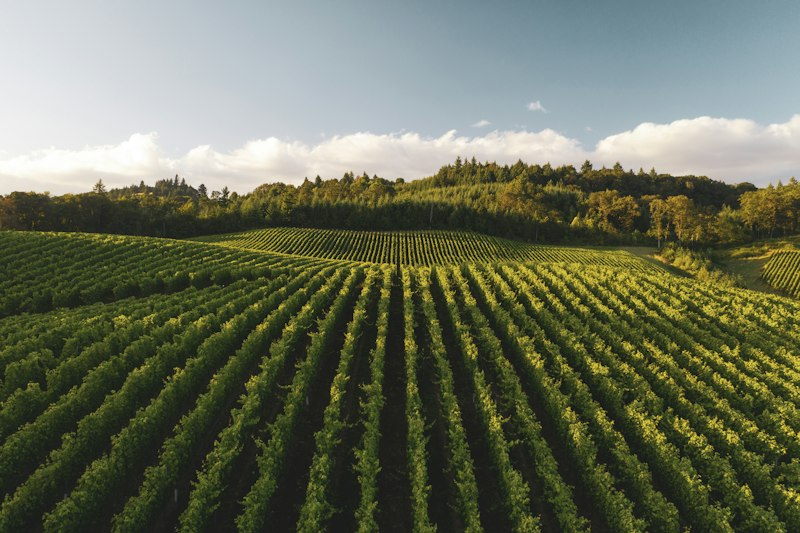
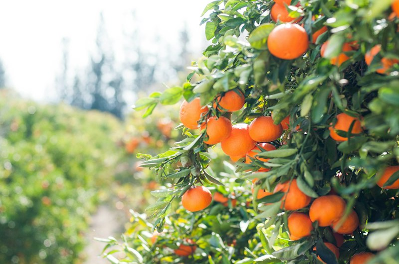

Precision Drip Irrigation: How Indian Farmers Cut Water Usage by 45%
A practical guide to drip lateral design, sub-main filtration, and fertigation scheduling that saves groundwater while boosting crop uniform weight.
Discover a smarter way to farm with crop insights, soil intelligence, weather guidance and AI-powered farming tools — all in one place.

Indian farmers face erratic rainfall patterns, unexpected pest outbreaks, degrading soil organic matter, and volatile market prices. AgriMind AI brings together science-backed decision tools in simple regional formats.
Blights, wilts, and leaf curls cause up to 30% yield loss when diagnosed late. Farmers often spend heavily on unverified pesticide sprays without knowing the exact causal pathogen.
Surplus urea usage has skewed N:P:K ratios across major agricultural tracts, degrading soil microbial activity and increasing pest vulnerability.
Transparent agronomic models that turn leaf photos, soil readings, and weather forecasts into clear, actionable farming guidance tailored to Indian agro-climatic conditions.
From leaf health diagnosis to market price trends, AgriMind brings scientific precision into the hands of every farmer.
Upload a photo of your affected crop leaf to receive illustrative disease indicators and preventive management steps.
Get tailored crop suitability recommendations based on your state, season, soil type and irrigation availability.
Evaluate soil pH balance, NPK macronutrient levels and get tailored soil health enhancement recommendations.
Access demo 5-day agro-meteorological forecasts and calculate custom irrigation intervals to preserve water.
Track sample modal prices, market arrivals and calculate potential farm-gate revenue for major agricultural commodities.
Project harvest revenues, break down operational expenses, and calculate net profit margins per acre or hectare.
Plan, track, and manage all crop activities from seed sowing to harvest with tailored agronomic task schedules.
Schedule watering sessions, track irrigation history, and prevent crop moisture stress with automatic reminders.
Early diagnosis of bacterial blights, powdery mildews, and viral leaf curls can protect up to 40% of crop value. Test our interactive image scanning demo to explore sample diagnosis workflows and cultural preventive measures.


Choosing what to plant shouldn't be guesswork. Our Smart Crop Planner cross-references your state, farming season (Kharif, Rabi, or Zaid), soil texture, and available irrigation to suggest resilient, high-yield options.
Healthy soils produce resilient harvests. Analyze soil pH buffer zones, track primary macronutrients, and compute precise irrigation intervals.
Visual pH needle gauge and horizontal NPK bars identify nutrient lockup, salinity, and deficiencies before planting.
Computes customized watering schedules based on vegetative stage, soil moisture retention, and recent rainfall credits.
Stay ahead of local weather patterns and track daily commodity auctions across prominent agricultural APMCs.
Stable dry air over the northern plains provides optimal conditions for winter field operations and second wheat irrigation.
View 5-Day Agro Forecast →Break down itemized inputs (seeds, fertilizer, labor, irrigation, tractor hire) and calculate exact profit margins and break-even mandi prices for every acre.
Essential agronomic parameters, typical durations, expected yields, and key verification points for major agricultural commodities.
Explore peer-reviewed farming guides on water conservation, soil rebuilding, integrated pest management, and farm business fundamentals.

A practical guide to drip lateral design, sub-main filtration, and fertigation scheduling that saves groundwater while boosting crop uniform weight.

Transform rice farming using 8-12 day young single seedlings, wide square spacing (25x25 cm), and alternate wetting and drying.

Master market arrival cycles, assaying quality parameters, and trading across state APMCs using the national electronic agriculture market.
Join thousands of farmers exploring crop health, soil diagnostics, and farm economics on AgriMind AI.